AI编程与取证数据转换
技术分享会
Trae IDE + SOLO模式 × BCP/SC/WY取证数据转换
2026年技术分享 | V1.1.00706
质量管理中心 · 智能终端产品测试 · 黄树金
2026-05-08
议程
第一部分：AI编程
- Trae IDE 双模式架构
- SOLO模式核心特性
- 日常编程流程
- SKILL与MCP配置
- 全球AI IDE对比
第二部分：取证数据转换
- 项目概述与核心能力
- 更新历程（20+版本迭代）
- 核心功能展示
- 数据质量系统
- AI搜索与RAG
第一部分
AI编程实战指南
Trae IDE + SOLO模式深度解析
Trae IDE 简介
字节跳动自研AI原生IDE · 中文语义精准 · 全流程免费
IDE 模式 - 人机协作
- 传统开发流程保留
- 智能问答与代码补全
- 用户掌控开发过程
- 适合渐进式AI辅助
SOLO 模式 - AI自主开发
- AI全流程掌控
- 主Agent-子Agent协同
- PRD到部署闭环
- 10分钟生成可运行Demo
SOLO模式核心特性
全程可控
实时预览
并行执行
个人无限制
中文语义优化
98%中文适配度，本土代码规范友好
全流程自动化
需求分析→代码生成→测试→部署闭环
SKILL与MCP配置
SKILL系统
- 项目级：.trae/skills/目录
- 全局级：~/.trae/skills/目录
- 对话中：@skill-name 引用
- GitHub社区可下载分享
MCP扩展
- filesystem - 文件系统操作
- github - GitHub集成
- postgres/mysql - 数据库
- slack - 消息通知
/spec 需求澄清机制
先理清需求，再二次确认，最后开发
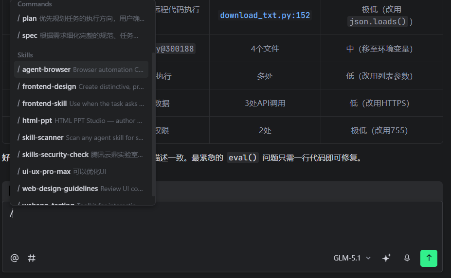
使用 /spec 命令
输入 /spec 先让AI帮你梳理需求，生成需求文档后再确认开发方向
二次确认机制
需求文档生成后，与AI对话确认细节，避免理解偏差导致返工
任务管理最佳实践
⚠️ 对话轮次过多提醒
当一个任务对话轮次过多时，AI理解能力会下降
- 建议重新开一个新任务
- 保持上下文清晰简洁
- 避免单个任务过于复杂
📝 创建项目专属Skill
将项目知识沉淀为Skill，供后续任务复用
- 整理项目架构和技术栈
- 记录关键业务逻辑
- 下一个任务直接引用
最佳实践：创建本项目的skill → 下一个任务喂给skill → AI快速理解项目上下文
Trae SOLO 最新功能
上下文压缩技术，快速熟悉项目
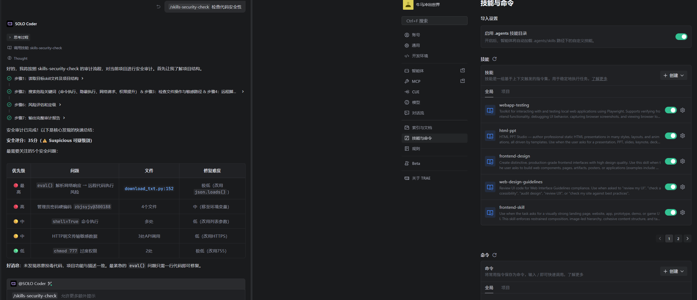
📦 上下文压缩
自动压缩有效上下文，保留关键信息，减少Token消耗
🚀 快速熟悉项目
新任务快速加载项目上下文，无需重新理解整个项目
🔒 Skill安全检查
AI生成的代码自动进行安全检查，确保代码质量
常用全局Skill
输入 / 斜杠命令即可引用，提升AI在特定场景的输出质量
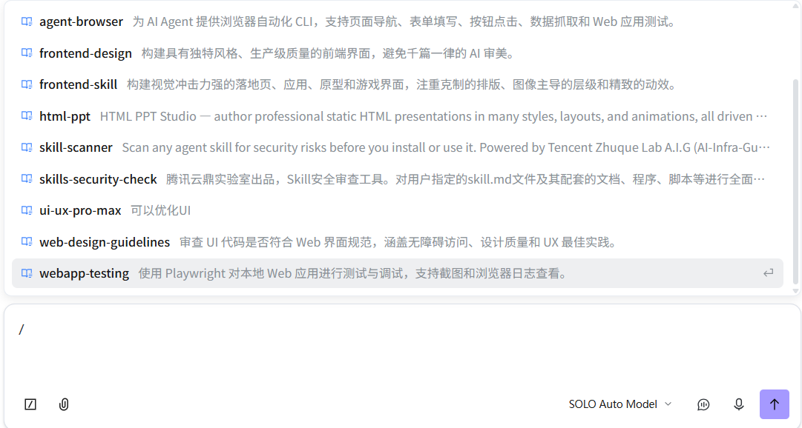
🌐 浏览器自动化
agent-browser — 页面导航、表单填写、数据抓取
webapp-testing — Playwright测试与调试
🎨 前端开发
frontend-design — 生产级前端界面
frontend-skill — 视觉冲击力强的落地页
html-ppt — 专业HTML演示文稿
🔒 安全审查
skill-scanner — 安装前安全扫描
skills-security-check — 全面安全审计
✅ 质量保障
ui-ux-pro-max — UI优化
web-design-guidelines — Web界面规范审查
Trae IDE 润色功能
输入框支持内容润色优化，左侧原始内容 → 右侧润色变更内容
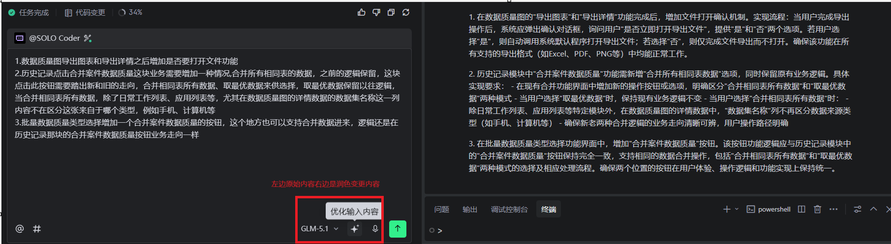
📝 需求描述润色
将模糊需求自动优化为结构化技术文档，减少理解偏差
🎯 代码注释优化
自动生成规范的代码注释和文档，提升代码可读性
Trae Friends 线下技术交流会
参与Trae社区活动，与AI编程爱好者交流最佳实践

线下技术分享会

社区成员合影
收获：学习AI编程最新技巧 · 分享实战经验 · 拓展技术人脉
全球AI IDE对比
| 工具 | 核心定位 | 最大优势 | 价格 |
|---|---|---|---|
| Trae SOLO | AI原生IDE | 中文适配·全流程免费 | 免费 |
| Cursor | AI原生IDE | 多模型·200万Token | $20/月 |
| Claude Code | 终端/IDE智能体 | 超大上下文·自主测试 | $20/月 |
| OpenAI Codex | Coding Agent | 任务执行·开源CLI | 按量付费 |
第二部分
取证数据转换工具
BCP/SC/WY 专用数据转换与智能分析平台
项目概述
公安电子数据取证数据转换与智能分析平台 V1.1.00706
核心定位
将BCP/SC/WY格式数据（压缩包）转换为可读Excel，提供智能搜索、数据质量分析、批量导入、自动升级等一站式解决方案
核心能力
- ZIP/7z → Excel 格式转换
- TF-IDF 毫秒级智能检索
- 必填+类型+互斥 3层质检
- 拖拽目录+多选批量处理
项目产出与实际应用
🏆 正式投入"2025年BCP部标标准专项（会战）"
鉴定工作依赖此工具进行数据分析和结果产出
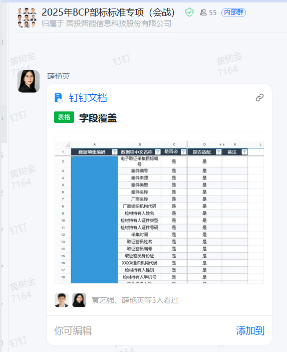
钉钉群协作：字段覆盖数据标准化工作
📊 数据转换
支持BCP/SC/WY三种格式
批量处理压缩包数据
自动生成Excel报告
🔍 智能分析
TF-IDF关键词检索
数据质量三层质检
可视化图表展示
✅ 鉴定支撑
提供标准化数据输出
支持鉴定报告生成
确保数据质量合规
价值：提升鉴定效率 · 确保数据质量 · 标准化输出流程
AI编程 vs 传统开发效率对比
以本项目为例：单人负责，从立项到V1.1.00706
| 对比维度 | 传统开发 | AI辅助开发 | 提升幅度 |
|---|---|---|---|
| 项目启动 | 1-2周搭建框架 | 1天生成基础架构 | 10x |
| 核心功能开发 | 2-3个月 | 2-3周 | 4x |
| Bug修复 | 逐个排查定位 | AI自动定位+修复 | 5x |
| 需求迭代(50+) | 每次1-2天 | 每次2-4小时 | 4x |
| 代码审查 | 人工逐行审查 | AI自动审查+安全扫描 | 6x |
| 文档编写 | 手动编写维护 | AI自动生成更新 | 8x |
总结：AI辅助开发整体效率提升 4-8倍，单人即可完成传统团队3-5人的工作量
更新历程（上）
从V1.1.00101到V1.1.00706，20+版本迭代
V1.1.00706 2026-05-06 互斥字段必填标记逻辑修复
多字段有值时随机保留一个字段作为必填项，增加互斥配置查看功能
V1.1.00705 2026-04-29 批量打开性能优化
18个窗口错开启动(500ms间隔)，XML安全解析，错误日志路径显示
V1.1.00704 2026-04-27 批量转换结果勾选
勾选框、全选/取消、打开选中项目、安装包缩减260M→136M
V1.1.00703 2026-04-23 批量压缩包导入+数据类型自检
支持拖拽目录、7组互斥字段规则、数据类型验证(c57/n20/d8等)
V1.1.00614 2026-04-21 数据质量图合并筛选优化
历史记录合并时优先选择必填填充率最大值，修复WY表未显示问题
V1.1.00613 2026-04-20 BOM编码修复
修复历史记录合并按钮不生效、BOM重复注入、升级程序编码不匹配
V1.1.00612 2026-04-18 数据质量详情导出+安装包优化
整合为单Sheet导出、安装包覆盖自动清理旧配置、升级确保config.enc拷贝
V1.1.00610 2026-04-16 行详情框拖拽+放大按钮
QSplitter实现拖拽调整高度、最大化/还原切换
V1.1.00609 2026-04-16 表格行详情+升级性能优化
点击行显示完整数据详情、双击弹出独立对话框、升级日志缓冲+增量检测
V1.1.00608 2026-04-15 "其他(生成)"数据质量图
新增总案件2025新表配置读取、取消按钮功能修正
V1.1.00607 2026-04-15 全局滚动条+多窗口+升级自动关闭
统一蓝色主题滚动条、支持同时打开多个数据查看窗口、升级后自动关闭
更新历程（下）
早期版本迭代记录
V1.1.00606 2026-04-15 单类型数据质量展示优化
手机/计算机BCP单独展示时仅读取对应配置，Tab标签和报表标题动态化
V1.1.00605 2026-04-15 合并进度+放大视图增强
合并进度显示在数据查看窗口、放大视图支持表头筛选
V1.1.00604 2026-04-14 多检材合并数据质量图优化
必填项柱状图按填充率排序、详细表格来源标注(手机/计算机)
V1.1.00603 2026-04-13 Excel行数限制+写入速度优化
自动处理超1048576行数据、ws.append()批量写入提升50-100倍速度
V1.1.00602 2026-04-08 加密检测+数据质量报告类型选择
ZIP/7Z加密检测(5次密码尝试)、手机/计算机BCP独立质量报告Tab
V1.1.00601 2026-04-07 数据质量图增强+图表导出Excel
必填项相关列、双Tab显示(总表/必填项)、饼图柱状图一键导出Excel
V1.1.00504 2026-04-01 点击右侧显示+配置表缺失检测
点击必填项列表表名在右侧直接显示数据、检测配置中有但工作表不存在的表
V1.1.00503 2026-03-30 必填项自检列表+升级优化
独立Tab检测WY类型必填项是否整列为空、SkipInternal配置控制_internal拷贝
V1.1.00501 2026-03-27 必填字段标记【必】+工作表完整名称
红色【必】标记、移除31字符截断限制、星号匹配范围限定WY类型
V1.1.00402 2026-03-18 应用数据精确显示+第二列字段配置
点击应用名称显示该应用所有工作表数据、建立行数据归属映射
V1.1.00401 2026-03-13 自动升级功能上线
启动自动检测新版本、升级进度显示、应用名称智能显示、日志开关配置
V1.1.00301 2026-02-09 AI智能搜索优化
点击AI按钮直接跳转搜索页、关键词高亮显示、应用列表单选多选导出
V1.1.00202 2026-02-05 应用列表功能上线
树形结构展示应用和子节点、数据过滤显示、应用导出功能
V1.1.00201 2026-01-30 RAG智能搜索+工作表异步加载
AI增强搜索、TF-IDF关键词匹配、可靠来源跳转、BCP格式兼容、帮助与反馈
V1.1.00101 2026-01-15 初始版本发布
支持BCP和SC格式转换、ZIP/7z导入、数据查看和搜索、历史记录管理
功能界面 - 工作列表
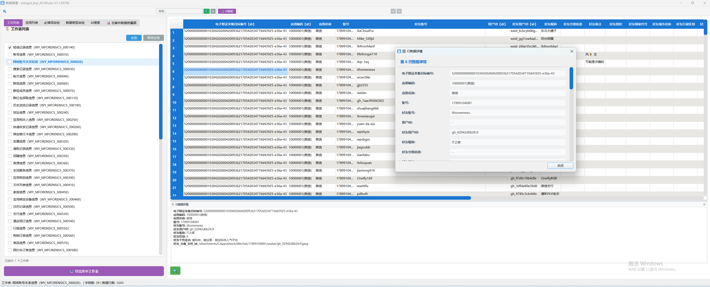
支持批量导入、多文件勾选、数据质量类型选择
功能界面 - 应用列表
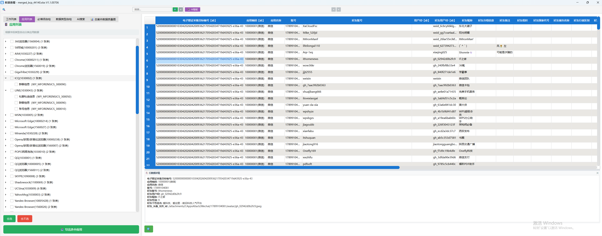
树形结构展示应用和工作表，支持数据过滤与导出
功能界面 - 批量生成
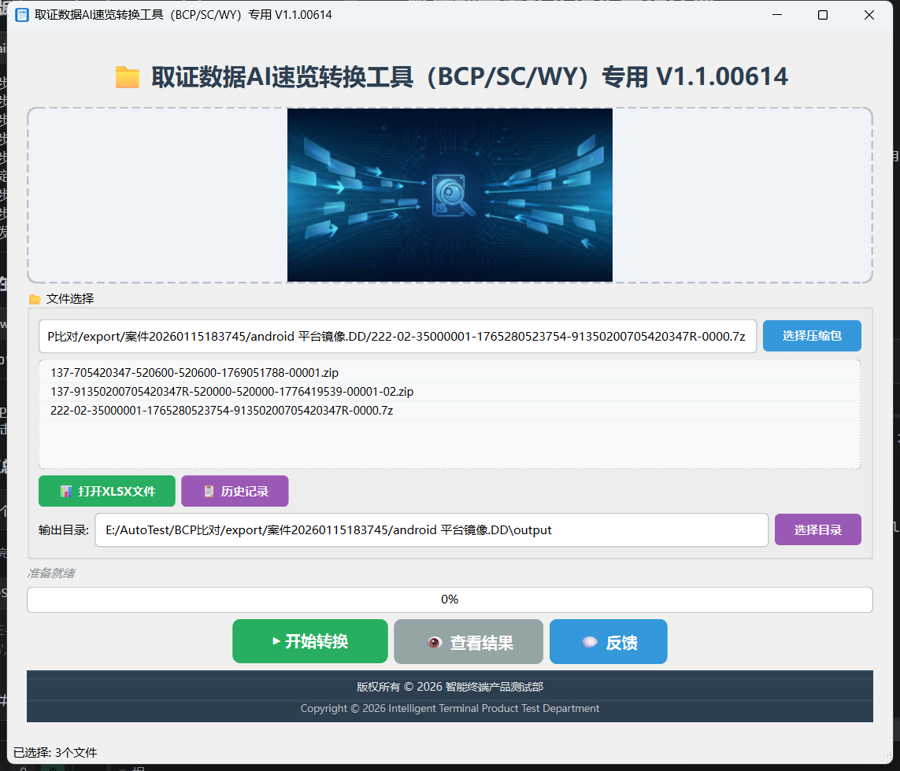
批量生成主页面
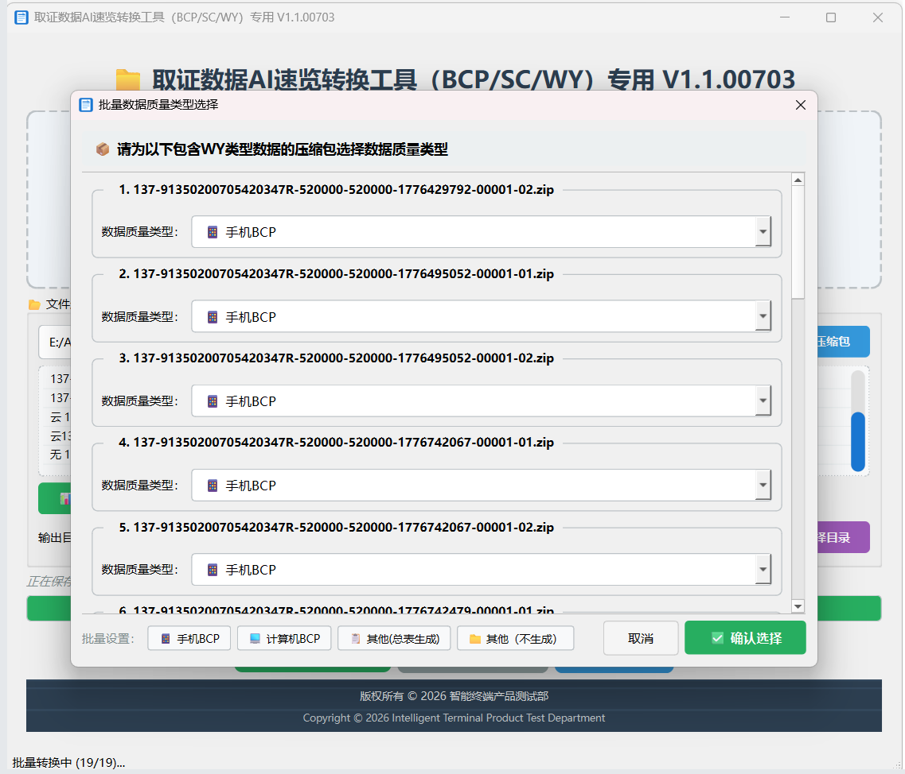
批量生成结果页面
数据质量系统
必填项自检
43组互斥规则，动态判断有值字段
数据类型自检
10+种类型定义，c57/n20/d8等
数据质量图
饼图+柱状图，可视化展示
数据质量界面
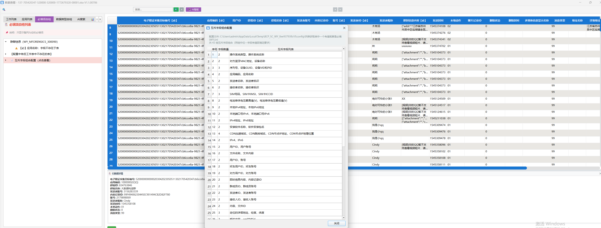
必填项自检列表
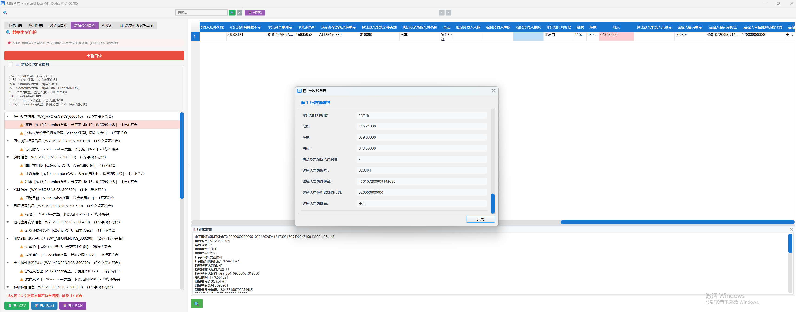
数据类型自检验证
数据质量图
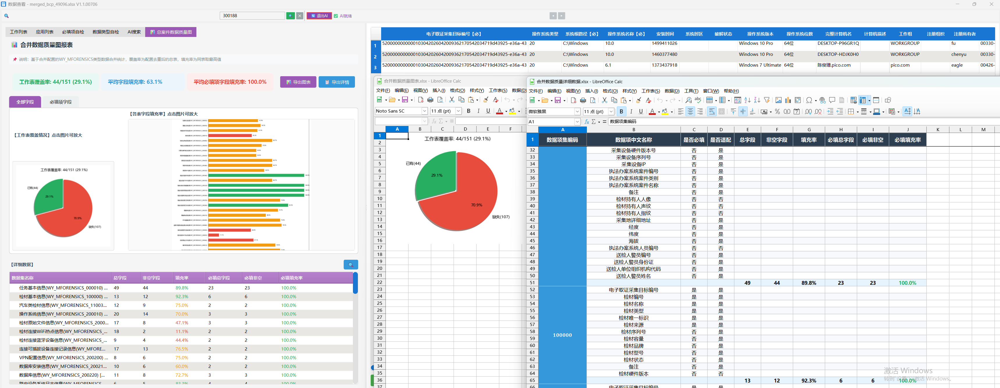
饼图+柱状图展示，手机/计算机案件数据质量可视化
AI搜索系统
🔵 生产引擎 - FastRAGEngine
- TF-IDF 关键词匹配
- 中文分词（字符 n-gram）
- 倒排索引构建
- 毫秒级响应
⚪ 备用引擎 - 向量搜索+LLM
- ChromaDB 向量存储
- text2vec 语义嵌入
- Qwen2.5 本地 LLM
- REST API 服务
AI智能搜索界面

TF-IDF+RAG双引擎，关键词高亮，可靠来源跳转
技术架构
技术栈
- Python 3.12 - 核心 runtime
- PyQt6 - GUI 框架
- openpyxl - Excel 处理
- py7zr - 压缩包解压
- TF-IDF - 搜索引擎
启动链路
启动器+升级检查
中间层入口
核心主文件
技术要点总结
AI编程最佳实践
- 独立虚拟环境隔离项目
- SKILL提供专业领域知识
- Plan审核检查执行步骤
- 复杂任务拆分逐步实现
取证工具核心特性
- 配置加密保护敏感信息
- 双引擎搜索确保可用性
- 三层质检保证数据质量
- 20+版本迭代持续优化
质量保障机制
- 单元测试脚本实时校验
- 自动化测试覆盖核心功能
- 版本发布前质量门禁
- 持续集成保证产品稳定
核心理念：测试驱动开发 + 自动化质量门禁 = 高质量产品迭代
Q & A
感谢聆听
Trae IDE + SOLO模式 | BCP/SC/WY取证数据转换工具 V1.1.00706